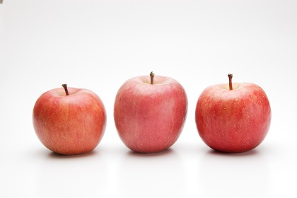

リンゴ（林檎、学名：Malus pumila）は、バラ科リンゴ属の落葉高木樹。またはその果実のこと。植物学上はセイヨウリンゴと呼ぶ。春、白または薄紅の花が咲く。果実は球形で甘酸っぱい。
リンゴに限らず商品価値の高い果実を収穫するためには、開花直前から開花時期に優位な花を残す「花摘み」、結実後30日程度を目安に実を間引く「摘果」作業が必要である。リンゴには果実に袋をかける有袋栽培とかけない無袋栽培がある。無袋の方が日光が多くあたり糖度も上がるが、ふじ等の一部の品種は果実の色を鮮やかにし商品価値を上げるため有袋栽培を行う。また、有袋栽培には貯蔵性が向上する効果もあり、さび防止のためには遮光度の弱い袋を使用し、着色向上のためには遮光度の強い新聞紙や二重袋などを使用する。名称の頭に「サン」が付くリンゴは無袋で栽培されたことを示し、見栄えは悪いが甘く美味しいリンゴが収穫される。着色には太陽光が大きな役割を果たすため、果実の日当たりをよくするため摘葉および玉まわし（着色ぐあいを均一にするため、樹上の果実を回転させること）、太陽光を反射させるためのシートの敷設などが行われる（参考画像参照）。なお、これらの作業は農家にとって大きな負担となるため、近年[いつ?]では着色促進剤が使われることもあるが、着色系と呼ぶ色付きの優れた選抜亜種への更新も行われる。省作業になる「葉とらずリンゴ」は摘葉を行わない。樹形は矮性が主流となっている。近年[いつ?]は花粉を媒介する昆虫の減少から人手による人工授粉も広く行われている。または摘花の省力化目的でギ酸カルシウム剤を散布する場合もある[11]。
